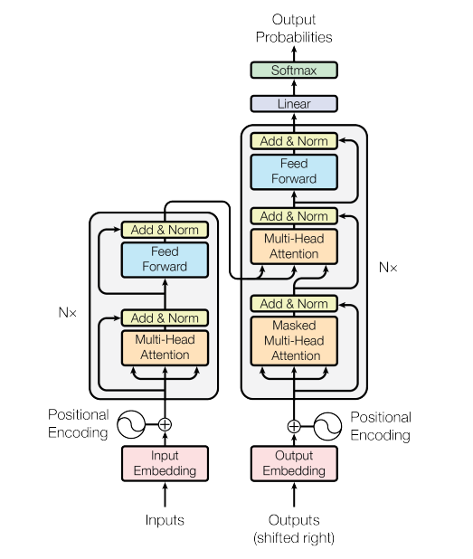
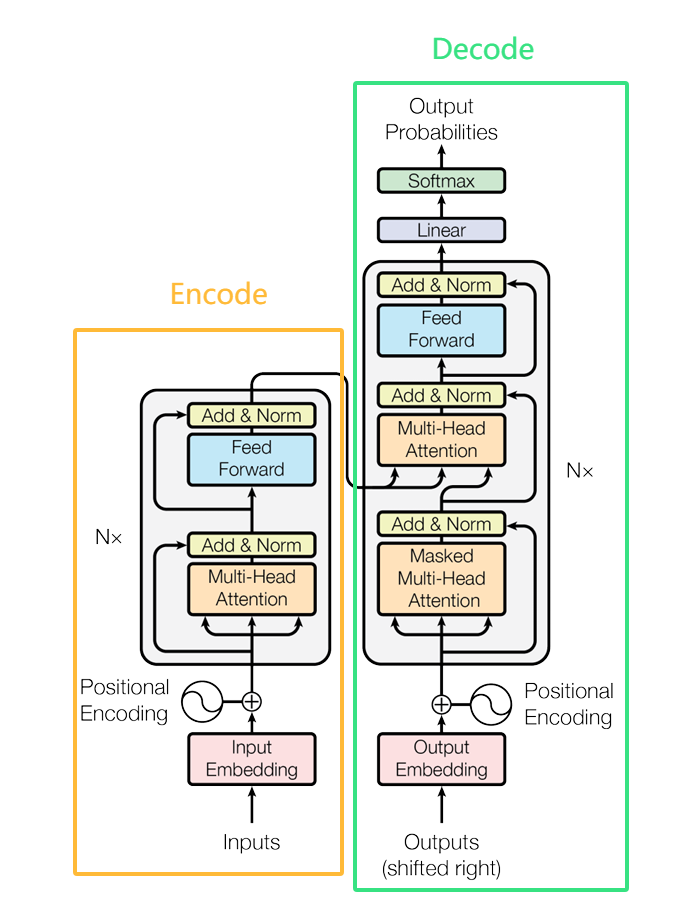
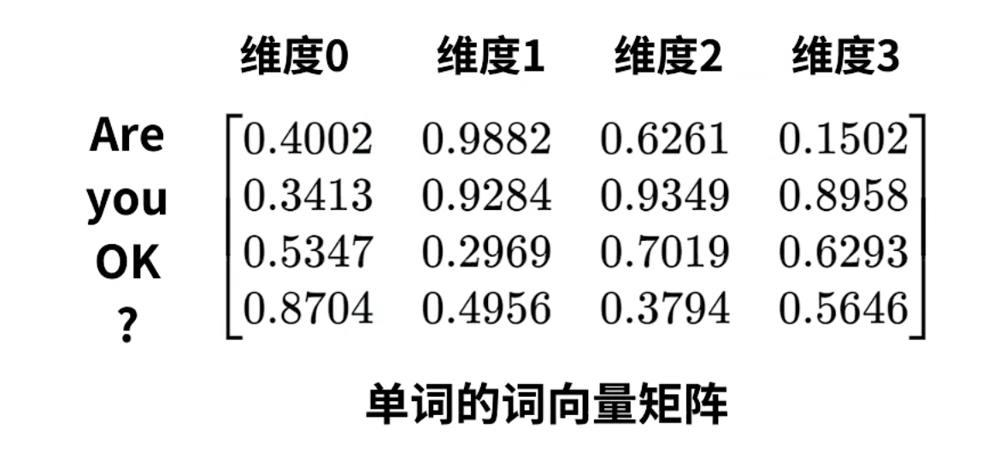
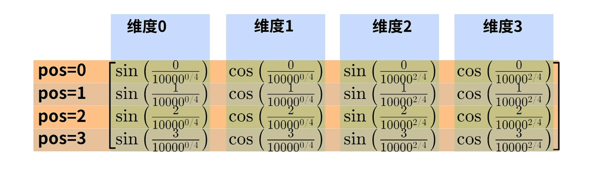
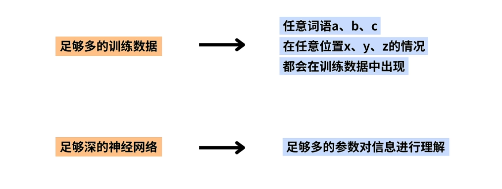
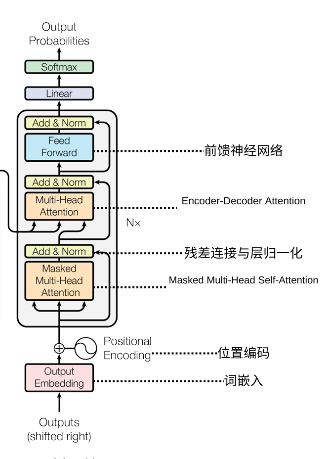

介绍 Transformer 的结构及一个简单的PyTorch实现和训练代码
Transformer 是在论文 attention is all you need 中所提出的一个seq2seq模型
Transformer结构图

Transformer由Encode和Decode两部分组成

Encode 把输入处理成隐藏层, Decode 把Encode获得的信息处理成自然语言序列
Encode的结构

Encode中包含:
- 词嵌入
- 位置编码
- 多头自注意力
- 残差连接及层归一化
- 前馈神经网络
词嵌入(Input Embedding)
每个输入词语通过一个词嵌入层（Embedding Layer）映射到一个固定维度的连续向量空间。
在实现词嵌入时往往可以利用PyTorch的torch.nn.Embedding(vocab_size, d_model)
位置编码(Positional Encoding)
由于 Transformer 模型本身是基于自注意力机制的，没有内建的顺序信息，它不能直接获取输入序列的顺序。为了解决这个问题，Transformer 引入了位置编码（Positional Encoding）。
位置编码的目的是, 将位置信息附加到原始的信息上.
位置编码的计算方式:

例子:
pos表示词在序列中的位置:
Are -> 0 you -> 1 OK -> 2 ? -> 3
d表示位置编码向量的总维度数 此时是4
i表示位置编码向量维度索引的一半
可以得到位置编码:
词嵌入 + 位置编码 极大丰富了输入特征
关于位置编码的一些问题:
- 位置嵌入不会破坏词向量本身的信息吗?
不会, 我们用远大于"词向量 + 位置编码"数量的训练数据和足够深的神经网络

- 若出现了"碰撞" 即一个词向量+该位置的位置编码 恰好等于 另一个词向量与此位置的位置编码 会怎样?
无所谓 每个词都是高维表示 哪怕一个维度出现碰撞 其他维度也不同 所有维度同时出现碰撞的概率几乎为0
代码实现Positional_Encoding
# Positional_Encoding的计算
class PositionalEncoding(nn.Module):
def __init__(self, d_model, drop_out, max_len):
super(PositionalEncoding, self).__init__()
self.dropout = nn.Dropout(p = drop_out)
pe = torch.zeros(max_len, d_model)
for i in range(max_len):
for j in range(d_model):
if(j == 0 or j % 2 == 0):
pe[i][j] = math.sin(i/(math.pow(10000, j/d_model)))
else:
pe[i][j] = math.cos(i/(math.pow(10000, (j-1)/d_model)))
pe = pe.unsqueeze(0).transpose(0, 1)
self.register_buffer('pe', pe)
def forward(self, tens):
# tens: [seq_len, batch_size, d_model
tens = tens + self.pe[:tens.size(0), :]
return self.dropout(tens)
多头自注意力(Mulit-head self attention)
自注意力
自注意力就是通过计算输入序列中各元素之间的关系（注意力），使得模型能够在处理某一个元素时，关注与之相关的其他元素，从而捕捉到更丰富的上下文信息。
我们定义三个矩阵 $$W_q, W_k, W_v$$使用这三个矩阵分别对所有的字向量进行三次线性变换，于是所有的字向量又衍生出三个新的向量q, k, v。我们将所有的q向量拼成一个大矩阵，记作查询矩阵 Q，将所有的k向量拼成一个大矩阵，记作键矩阵 K，将所有的 v向量拼成一个大矩阵，记作值矩阵 V
$$即Q=W_q⋅x_i, K=W_k⋅x_i, V=W_v⋅x_i $$
为了获得第一个字的注意力权重，我们需要用第一个字的查询向量 q1 乘以键矩阵 K
[0, 4, 2]
[1, 0, 2] x [1, 4, 3] = [2, 4, 4]
[1, 0, 1]
之后还需要将得到的值经过 softmax，使得它们的和为 1
softmax([2, 4, 4]) = [0.0, 0.5, 0.5]
有了权重之后，将权重其分别乘以对应字的值向量 v
0.0 * [1, 2, 3] = [0.0, 0.0, 0.0]
0.5 * [2, 8, 0] = [1.0, 4.0, 0.0]
0.5 * [2, 6, 3] = [1.0, 3.0, 1.5]
最后将这些权重化后的值向量求和，得到第一个字的输出
[0.0, 0.0, 0.0]
+ [1.0, 4.0, 0.0]
+ [1.0, 3.0, 1.5]
-----------------
= [2.0, 7.0, 1.5]
对其它的输入向量也执行相同的操作，即可得到通过 self-attention 后的所有输出
以上是对单个字的处理, 对于一整个输出, 我们用矩阵进行处理, 一次计算得出全部结果
 $$将 Q 和 K^T 相乘，然后除以 d_k，经过 softmax 以后再乘以 V 得到输出$$
$$将 Q 和 K^T 相乘，然后除以 d_k，经过 softmax 以后再乘以 V 得到输出$$
多头自注意力(Multi-Head Attention)
以上都是在介绍自注意力, 而多头自注意力就是定义多组Q, K, V, 让他们分别关注不同的上下文. 每组Q, K, V得到的结果相加即最终结果
残差连接与层归一化
上一步中我们得到的最终结果, 即各个字对每个字的注意力矩阵后, 将其与开始时做完位置编码的矩阵X相加. 这就是残差链接
层归一化的作用是把神经网络中隐藏层归一为标准正态分布，以起到加快训练速度，加速收敛, 防止梯度爆炸与梯度消失的作用
计算出矩阵中每列的均值和方差 $$ \mu = \frac{1}{d} \sum_{i=1}^{d} x_i \ \sigma^2 = \frac{1}{d} \sum_{i=1}^{d} (x_i - \mu)^2 $$
然后用每一列的每一个元素减去这列的均值，再除以这列的标准差，从而得到归一化后的数值，加 ϵ 是为了防止分母为 0 $$ \hat{x}_i = \frac{x_i - \mu}{\sqrt{\sigma^2 + \epsilon}} $$ 至此完成矩阵的层归一化
前馈神经网络
Transformer中的前馈神经网络一般由两个线性变换（即全连接层）和一个激活函数组成. 用来增强模型表达能力以及提供非线性转换, 使模型能够学习更复杂的特征.
至此Encode的结构搭建完成
Decode的结构

Decode 中和 Encode中有很多相同的部分, 比如 位置编码与词嵌入, 前馈神经网络, 残差连接等等, 这里不再重复, 重点放在Encode中没有的两个结构:
- Masked Multi-Head Self-Attention
- Encoder-Decoder Attention
Masked Multi-Head Self-Attention
我们要求Decode需要遵循一定的时序规则. 即在每个词预测时应该仅依赖于之前的词，而不能看到未来的词为了满足这个需求, Masked Multi-Head Self-Attention会在计算注意力时, 对未来的词进行mask, 使得Decode在处理每个词时只能看到它之前的词, 而看不到后面的词, 确保生成模型的因果性.
在前面的操作上和普通的多头自注意力都一样, 输入的字符串在经过词嵌入和位置编码后, 进行三次线性变换得到矩阵Q, K, V, 然后进行self-Attention操作得到 Scaled Scores . 接下来进行mask, 非常简单, 就是生成一个下三角全 0，上三角全为负无穷的矩阵，然后将其与 Scaled Scores 相加即可.
之后再做 softmax，就能将 - inf 变为 0，得到的这个矩阵即为每个字之间的权重
Masked Encoder-Decoder Attention
这部分的计算流程和Masked Multi-Head Self-Attention很像, 只是不需要对输入X进行三次线性变换, 而是Q就是Masked Multi-Head Self-Attention的输出, 而K, V时Encoder的输出.
完成
在Transformer中, Encoder和Decoder都可以有多层叠在一起. 整个的内容可以被总结在这样的一张图中

Pytorch的简单实现
在Pytorch中, 已经有了transformer模块. 所以实现一个transformer很简单.
我们来实现一个简单的中译英模型及训练
库引入及模型config
import math
import json
import time
import torch
import datetime
import pickle
import numpy as np
import torch.nn as nn
import torch.optim as optim
import torch.utils.data as Data
from tiktoken._educational import SimpleBytePairEncoding
from tiktoken._educational_cn import SimpleBytePairEncodingCN
# model_config
d_model = 512
d_ff = 2048
n_layers = 4
n_heads = 4
drop_out = 0.1
src_len = 512
tgt_len = 512
max_len = 1024
# train_config
batch_size = 50
num_epoch = 12
learning_rate = 1e-4
epoch_size_to_update = 6 # scheduler的参数, 每epoch_size_to_update的epoch后更新lr, 更新为lr*gamma
gamma = 0.1
betas_1 = 0.9 # 控制动量（momentum）的计算
betas_2 = 0.98
PAD_ID = 0 # [PAD] 的 token序号
steps = 5 # 每steps个batch输出一次损失
# tokenizer
vocab_size = 4096
pattern = "'s|'t|'re|'ve|'m|'ll|'d| ?[\p{L}]+| ?[\p{N}]+| ?[^\s\p{L}\p{N}\[\]]+|\s+(?!\S)|\s+|\[.*?\]"
# device
device = "cuda:0"
tokenizer使用的是魔改版tiktoken中_educational里的SimpleBytePairEncoding
with open("cn_vocab.pkl", "rb") as f:
cn_tokenized_data = pickle.load(f)
cn_tokenizer = SimpleBytePairEncodingCN(pat_str=pattern, mergeable_ranks=cn_tokenized_data)
with open("en_vocab.pkl", "rb") as f:
en_tokenized_data = pickle.load(f)
en_tokenizer = SimpleBytePairEncoding(pat_str=pattern, mergeable_ranks=en_tokenized_data)
加载训练模型的数据以及处理
# 处理数据集的数据, 加上[PAD]等特殊符号
# 加载训练模型数据
with open("test.jsonl", 'r', encoding='utf-8') as datas:
datasets = [json.loads(line) for line in datas]
print(f"load done {len(datasets)}")
pad_id = [0]
# [START]: starting of decoding input
# [EOS]: starting of decoding output
# [PAD]: fill in blank sequence if current batch data size is short than time steps
enc_inputs = [cn_tokenizer.encode(item["chinese"]) for item in datasets]
dec_inputs = [en_tokenizer.encode("[START]"+item["english"]) for item in datasets]
dec_outputs = [en_tokenizer.encode(item["english"]+"[EOS]") for item in datasets]
print("begin fill pad")
#fill with [PAD]
pssd_enc_inputs = []
pssd_dec_inputs = []
pssd_dec_outputs = []
pssd_enc_inputs = [
enc + pad_id * (src_len - len(enc)) if len(enc) < src_len else enc[:src_len]
for enc in enc_inputs
]
pssd_dec_inputs = [
dec + pad_id * (tgt_len - len(dec)) if len(dec) < tgt_len else dec[:tgt_len]
for dec in dec_inputs
]
pssd_dec_outputs = [
dec + pad_id * (tgt_len - len(dec)) if len(dec) < tgt_len else dec[:tgt_len]
for dec in dec_outputs
]
pssd_enc_inputs = torch.tensor(pssd_enc_inputs)
pssd_dec_inputs = torch.tensor(pssd_dec_inputs)
pssd_dec_outputs = torch.tensor(pssd_dec_outputs)
# 配置dataloader
class MyDataSet(Data.Dataset):
def __init__(self, enc_inputs, dec_inputs, dec_outputs):
super(MyDataSet, self).__init__()
self.enc_inputs = enc_inputs
self.dec_inputs = dec_inputs
self.dec_outputs = dec_outputs
def __len__(self):
return self.enc_inputs.shape[0]
def __getitem__(self, idx):
return self.enc_inputs[idx], self.dec_inputs[idx], self.dec_outputs[idx]
loader = Data.DataLoader(MyDataSet(pssd_enc_inputs, pssd_dec_inputs, pssd_dec_outputs), batch_size, True)
然后是重点, 用torch.nn中的transformer来实现一个简单的transformer模型
# 模型结构
# Positional_Encoding计算
class PositionalEncoding(nn.Module):
def __init__(self, d_model, drop_out, max_len):
super(PositionalEncoding, self).__init__()
self.dropout = nn.Dropout(p = drop_out)
pe = torch.zeros(max_len, d_model)
for i in range(max_len):
for j in range(d_model):
if(j == 0 or j % 2 == 0):
pe[i][j] = math.sin(i/(math.pow(10000, j/d_model)))
else:
pe[i][j] = math.cos(i/(math.pow(10000, (j-1)/d_model)))
pe = pe.unsqueeze(0).transpose(0, 1)
self.register_buffer('pe', pe)
def forward(self, tens):
# tens: [seq_len, batch_size, d_model
tens = tens + self.pe[:tens.size(0), :]
return self.dropout(tens)
# 构造模型
class MyTransformer(nn.Module):
def __init__(self):
super(MyTransformer, self).__init__()
# 使用到了nn.Transformer
self.transformer = nn.Transformer(
d_model=d_model,
dim_feedforward=d_ff,
nhead=n_heads,
num_encoder_layers=n_layers,
num_decoder_layers=n_layers,
)
self.enc_embedding = nn.Embedding(vocab_size, d_model)
self.dec_embedding = nn.Embedding(vocab_size, d_model)
self.pos_emb = PositionalEncoding(d_model, drop_out, max_len)
self.projection = nn.Linear(d_model, vocab_size, bias=False).to(device)
def forward(self, enc_inputs, dec_inputs):
'''
enc_inputs: [batch_size, src_len]
dec_inputs: [batch_size, tgt_len]
'''
batch_size = enc_inputs.shape[0]
src_len = enc_inputs.shape[1]
tgt_len = dec_inputs.shape[1]
enc_key_pad_mask = enc_inputs.eq(0).to(device)
dec_key_pad_mask = dec_inputs.eq(0).to(device)
enc_dec_key_padding_mask = enc_key_pad_mask
enc_mask = None
enc_dec_mask = None
dec_mask = self.transformer.generate_square_subsequent_mask(tgt_len).to(device)
enc_input = self.pos_emb(self.enc_embedding(enc_inputs).transpose(0, 1).to(device))
dec_input = self.pos_emb(self.dec_embedding(dec_inputs).transpose(0, 1).to(device))
dec_output = self.transformer(
src=enc_input,
tgt=dec_input,
src_mask=enc_mask,
tgt_mask=dec_mask,
memory_mask=enc_dec_mask,
src_key_padding_mask=enc_key_pad_mask,
tgt_key_padding_mask=dec_key_pad_mask,
memory_key_padding_mask=enc_dec_key_padding_mask,
)
dec_output = self.projection(dec_output.transpose(0, 1))
return dec_output.view(-1, dec_output.shape[-1])
加载训练用的损失函数和梯度下降算法
model = MyTransformer().to(device)
criterion = nn.CrossEntropyLoss(ignore_index=PAD_ID)
optimizer = optim.Adam(model.parameters(), lr=learning_rate, betas=(betas_1, betas_2))
scheduler = torch.optim.lr_scheduler.StepLR(optimizer, step_size=epoch_size_to_update, gamma=gamma)
开始训练
# 训练
for epoch in range(num_epoch):
model.train()
for enc_inputs, dec_inputs, dec_outputs in loader:
enc_inputs, dec_inputs, dec_outputs = enc_inputs.to(device), dec_inputs.to(device), dec_outputs.to(device)
optimizer.zero_grad()
outputs = model(enc_inputs, dec_inputs)
loss = criterion(outputs, dec_outputs.view(-1))
loss.backward()
optimizer.step()
scheduler.step()
print(f"Learning Rate after epoch {epoch+1}: {scheduler.get_last_lr()[0]:.6f}")
本文结束